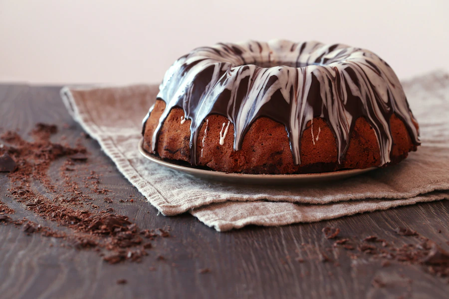

Receita de Bolo de Cenoura

INGREDIENTES
massa
- 1/2 xícara (chá) de óleo
- 3 cenouras médias raladas
- 4 ovos
- 2 xícaras (chá) de açúcar
- 2 e 1/2 xícaras (chá) de farinha de trigo
- 1 colher (sopa) de fermento em pó
cobertura
- 1 colher (sopa) de manteiga
- 3 colheres (sopa) de chocolate em pó
- 1 xícara (chá) de açúcar
- 1 xícara (chá) de leite
MODO DE PREPARO
massa
- Em um liquidificador, adicione a cenoura, os ovos e o óleo, depois misture.
- Acrescente o açúcar e bata novamente por 5 minutos.
- Em uma tigela ou na batedeira, adicione a farinha de trigo e depois misture novamente.
- Acrescente o fermento e misture lentamente com uma colher.
- Asse em um forno preaquecido a 180° C por aproximadamente 40 minutos.
cobertura
-
Despeje em uma tigela a manteiga, o chocolate em pó, o açúcar e o leite,
depois misture.
-
Leve a mistura ao fogo e continue misturando até obter uma consistência
cremosa, depois despeje a calda por cima do bolo.